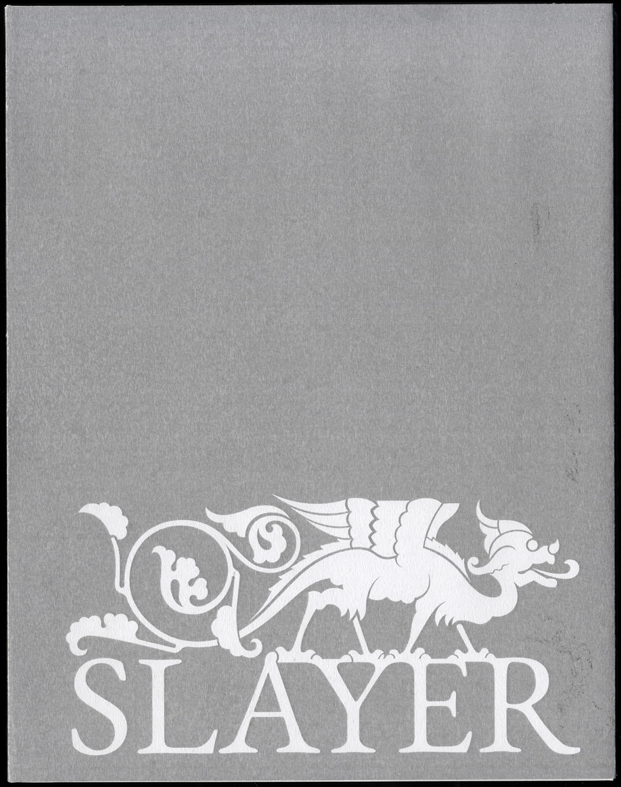
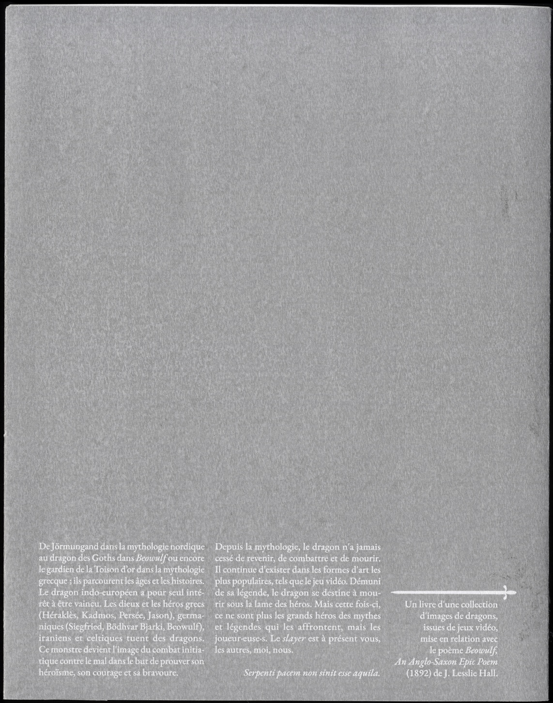
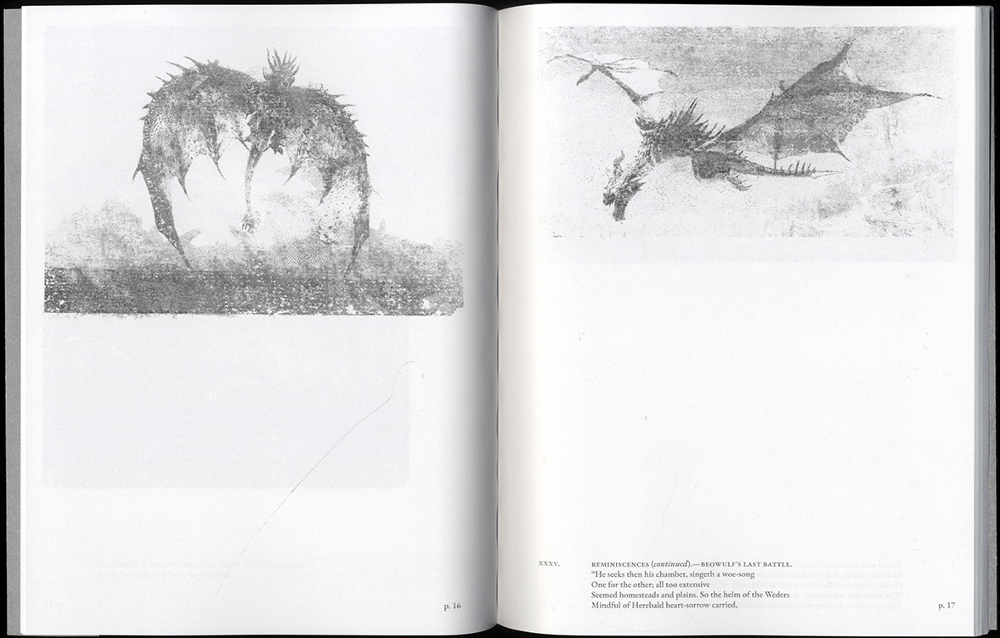
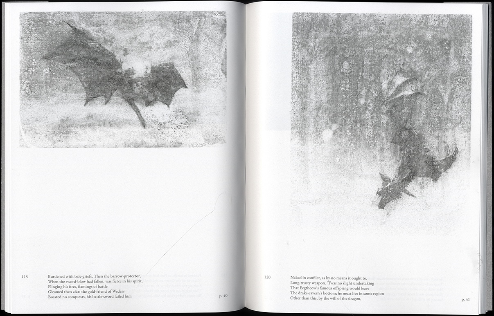
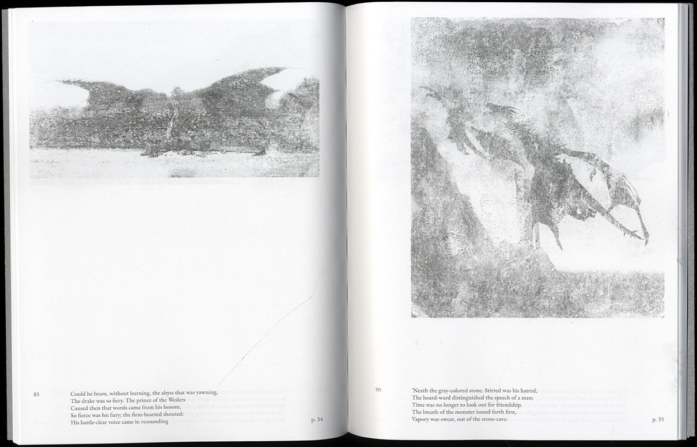
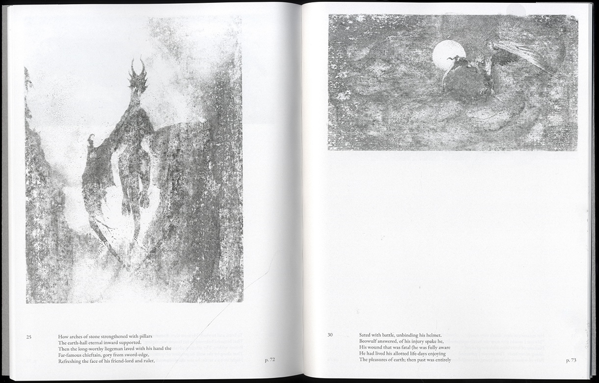

Slayer
Hommage à la créature mythologique du dragon, monstre honni et sacrifié, par une collecte d’images issues de jeux vidéo et mise en relation avec le poème Beowulf, An Anglo-Saxon Epic Poem (1892) de J. Lesslie Hall. A tribute to the mythological creature, the dragon, a despised and sacrificed monster, through a collection of images from video games and linked to the poem Beowulf, An Anglo-Saxon Epic Poem (1892) by J. Lesslie Hall.
Date
― 2024
― 2024
Format
― édition book 18 × 23 cm, 90 p.
― vidéo video 5 min
― édition book 18 × 23 cm, 90 p.
― vidéo video 5 min
Technique
― impression numériquedigital printing
― impression numériquedigital printing





